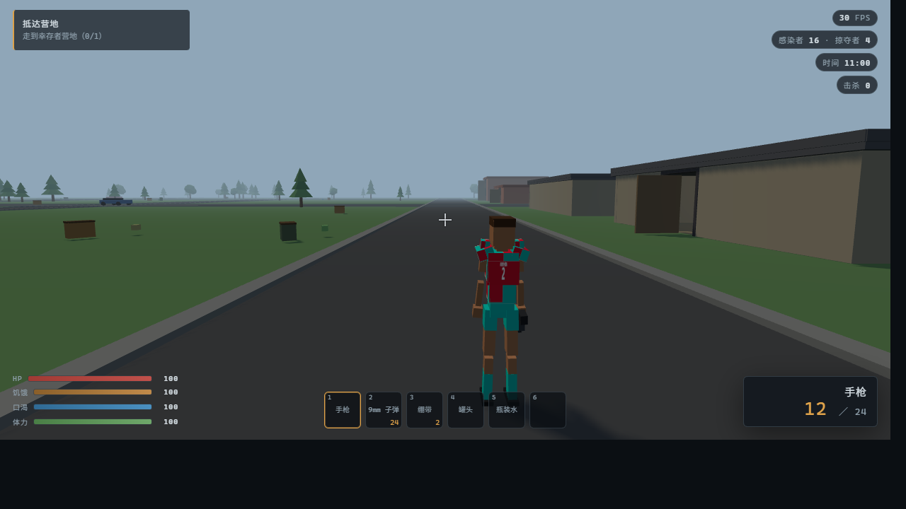
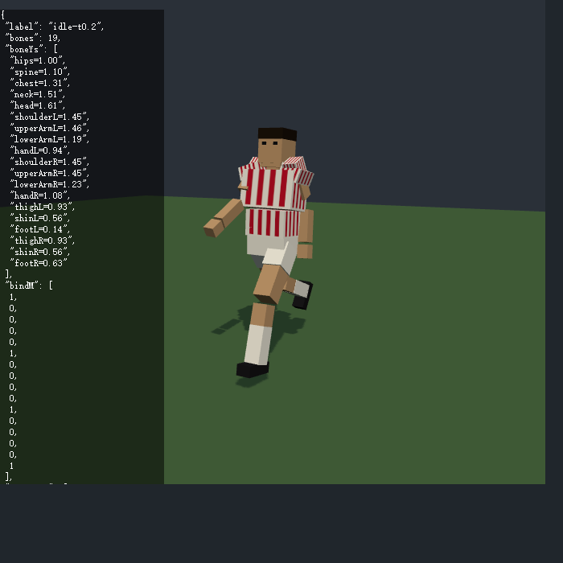
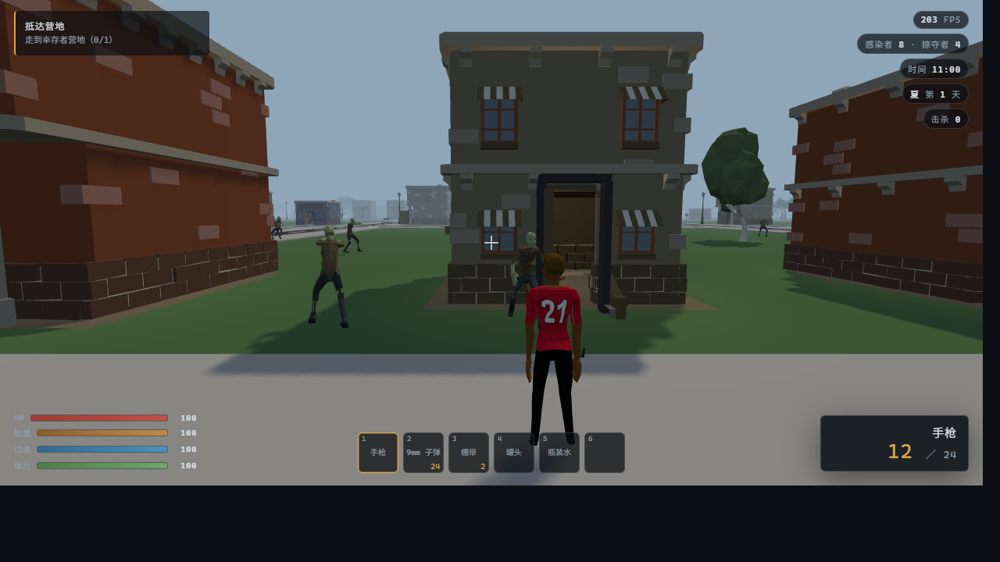
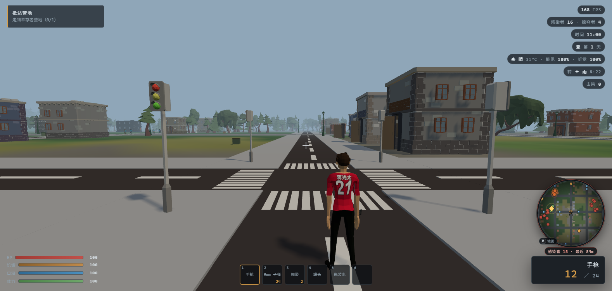
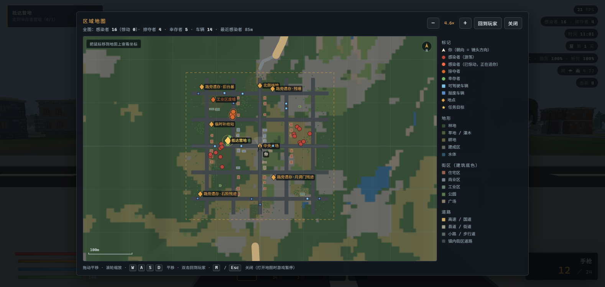

用真实地理数据铺出来的镇子：30 m 高程、10 m 土地覆盖、OSM 真实路网， 配上四季与九种天气、7 台可开的车、12 款可捏的体型、背包/搜刮/建造，还有跟着镜头转的小地图与 可缩放的大地图（感染者/道路/建筑一目了然）。 不联网、不装插件，一个静态目录就是整个游戏。
需要桌面浏览器（键盘 + 鼠标）· 建议 Chrome / Edge · 进游戏后点画面锁定指针， 按 Esc 暂停或解锁，WASD 移动、E 交互、V 切换第一/第三人称。




